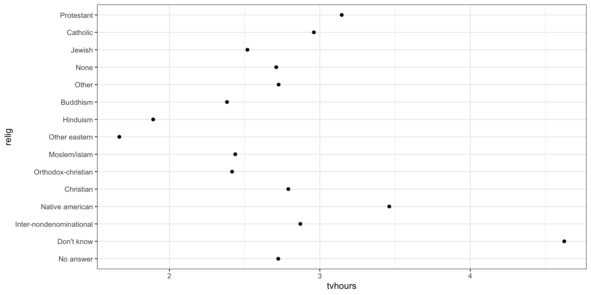

Data Wrangling: Transforming Data
Data Analysis & Information Extraction
Unit overview
Content
- Transforming Strings
- Transforming Strings: Regexp
- Working with factors
- Transforming Dates and Times
Data Wrangling
Objective: Make data ready for their future exploration and modelling
We need to convert raw data into processed data
Raw Data
- Data as it appears on the source origin.
- Any manipulation has been done to them.
Processed Data
- Each variable in a column.
- Each observation in a raw.
- Each observational unit is a cell.
- More complex data, interconnected tables.
Data Wrangling
- Importing the data
- Organizing the data
- Transforming the data

Transforming data
We have learnt how to import and organize data structure for the analysis, but now we have to know how to transform the data to suit our needs and make mutations to clean it more and have it ready for our analytically purpose.
We will follow focus on three groups of data…
- Strings
- Factors
- Dates and time
Transforming data
Packages
For this part we are going to work with three data types, for each data type there is an special package implemented in the tidyverse ecosystem.

For working with Strings

For working with factors (categorical data)

For working with dates and times.
Strings
Strings
Remember an String is a text format here some examples…
For doing all that we will use stringr a tidyverse package developed to work with Strings. All the functions in this package start with str_
Length of an String
We can compute the length of an string using str_length()
All operations can be applied to vectors too…
Try yourself! What will be the behavior with blank spaces inside the String?
Concatenating Strings I
We can combine (concatenate) Strings using str_c()
Try yourself! How can you combine two strings with a comma followed by a blank space?
Concatenating Strings II
This works with vectors too…
For collapsing a full large text in a single string
Subsetting strings
We would want to extract some parts of an string, we can do it using str_sub()
Text format
Regular Expressions
Regular Expressions (regexp)
Regular expressions are used to define patterns inside strings. We can do several thins with patterns…
- Find which strings complain with the pattern.
- Find in which position appears the pattern.
- Extract the pattern from the string.
- Replace the pattern in the string.
Basic regular expressions
We will start with a simple approach using simple patterns. Exact match (caution with upper and lower case)
Regular Expressions
For identifying any character we use .
Regular Expressions
To check if starts with a character(s) we use ^ at the beginning of the regex, for checking if it ends we use $ at the end of the regex.
[1] │ <C>ats
[2] │ <C>hung Lea
[3] │ <C>apitalRegular Expressions, some last tips
\\dany number\\sblank space[]set of elements e.g. [abc]: a or b or c[0-9]all numbers from 0 to 9[a-z]all letters in lower case[A-Z]all letters in upper case- We can use
+to repeat a pattern several times, e.g. two numbers:[0-9][0-9]or[0-9]+will work. - Special characters such as …
Regular Expressions, some last tips
[1] │ B<1><2>
[2] │ Eslava
[3] │ Two and a half MenLet’s practice!
Exercise 3.3.1
Given the following vector of motorways and roads in Spain, create a regex that finds the ones that are spelled correctly following naming conventions for free motorways in Spain e.g. A3, A12, etc.. (all free motorways have A as identifier and then a counter number)
Detect patterns
Now that we know how to build patterns we can find them…
[1] TRUE TRUE FALSEWe can select the elements that complain with the pattern…
Detect patterns
Also with data frames…
Counting patterns
¿How many times appears the pattern?
Let’s practice!
Exercise 3.3.1
Count the number of vowels for each word in the next data frame…
You can create a new column with the number of vowels for each word.
Replacing patterns
Another usage of patterns is to detect them and make replacements, for example for treating data and replace it. We can do this with str_replace() or str_replace_all(). For example, using biopics data set from fivethirtyeight library.
We are going to properly write the names of leading actor_actress to lower case and without blank spaces, replacing by _
fivethirtyeight::biopics %>%
select(lead_actor_actress) %>%
mutate(name_altered = str_to_lower(lead_actor_actress),
name_altered = str_replace_all(name_altered, " ", "_")) %>%
head(5)# A tibble: 5 × 2
lead_actor_actress name_altered
<chr> <chr>
1 Richard Attenborough richard_attenborough
2 Chiwetel Ejiofor chiwetel_ejiofor
3 James Franco james_franco
4 Jean-Carl Boucher jean-carl_boucher
5 Myles Berkowitz myles_berkowitz Let’s practice!
Exercise 3.3.2
In the last example, there are some cases where names have special characters, e.g. Jean-Carl. Modify the example to try to cover these cases substituting per _ as blank spaces.
fivethirtyeight::biopics %>%
select(lead_actor_actress) %>%
mutate(name_altered = str_to_lower(lead_actor_actress),
name_altered = str_replace_all(name_altered, " ", "_")) %>%
head(5)# A tibble: 5 × 2
lead_actor_actress name_altered
<chr> <chr>
1 Richard Attenborough richard_attenborough
2 Chiwetel Ejiofor chiwetel_ejiofor
3 James Franco james_franco
4 Jean-Carl Boucher jean-carl_boucher
5 Myles Berkowitz myles_berkowitz Factors
Factors
For working with categorical variables with a fixed number of values. As seen in the start of the unit we will work with forcats package included in the tidyverse environment.
Why to use factors?
Using Strings to store categories have two problems…
- Values are fixed and there is no error control
- No correct ordering
Creating a factor
Factors will help us avoiding these issues…
month_levels <- c(
"Jan", "Feb", "Mar", "Apr", "May", "Jun",
"Jul", "Aug", "Sep", "Oct", "Nov", "Dec"
)
y1 <- factor(x1, levels = month_levels)
sort(y1)[1] Jan Apr Dec
Levels: Jan Feb Mar Apr May Jun Jul Aug Sep Oct Nov DecWith pipes…
Factors
We will work with gss_cat data set contained at forcats
Rows: 21,483
Columns: 9
$ year <int> 2000, 2000, 2000, 2000, 2000, 2000, 2000, 2000, 2000, 2000, 20…
$ marital <fct> Never married, Divorced, Widowed, Never married, Divorced, Mar…
$ age <int> 26, 48, 67, 39, 25, 25, 36, 44, 44, 47, 53, 52, 52, 51, 52, 40…
$ race <fct> White, White, White, White, White, White, White, White, White,…
$ rincome <fct> $8000 to 9999, $8000 to 9999, Not applicable, Not applicable, …
$ partyid <fct> "Ind,near rep", "Not str republican", "Independent", "Ind,near…
$ relig <fct> Protestant, Protestant, Protestant, Orthodox-christian, None, …
$ denom <fct> "Southern baptist", "Baptist-dk which", "No denomination", "No…
$ tvhours <int> 12, NA, 2, 4, 1, NA, 3, NA, 0, 3, 2, NA, 1, NA, 1, 7, NA, 3, 3…Factors: Levels
How can you identify the possible levels of variable race?
# A tibble: 3 × 2
race n
<fct> <int>
1 Other 1959
2 Black 3129
3 White 16395Try levels() function.
Reordering Levels
Look at the following plot, it shows the average time spent watching tv per religion. A bit dirty don’t you think?
Reordering Levels
We can reorder the different levels of a factor, using fct_reorder() with three arguments:
- f, the factor we want to reorder.
- x, numeric vector for reordering.
- Optional. fun, in the case that there is different x values for the same f. By default, fun is the average.
There are two ways of using it…
Reordering Levels
Option 1: Inside the aesthetics mappings
Reordering Levels
Option 2: Inside mutate
Modifying the levels
We can also change the levels used on the factor. We can use fct_recode()
Look at this example…
Modifying the levels
We can change levels like this…
gss_cat %>%
mutate(partyid = fct_recode(partyid,
"Republican, strong" = "Strong republican",
"Republican, weak" = "Not str republican",
"Independent, near rep" = "Ind,near rep",
"Independent, near dem" = "Ind,near dem",
"Democrat, weak" = "Not str democrat",
"Democrat, strong" = "Strong democrat"
)) %>%
count(partyid)# A tibble: 10 × 2
partyid n
<fct> <int>
1 No answer 154
2 Don't know 1
3 Other party 393
4 Republican, strong 2314
5 Republican, weak 3032
6 Independent, near rep 1791
7 Independent 4119
8 Independent, near dem 2499
9 Democrat, weak 3690
10 Democrat, strong 3490Modifying the levels
We can also collapse them, creating a higher hierarchy…
gss_cat %>%
mutate(partyid = fct_collapse(partyid,
other = c("No answer", "Don't know", "Other party"),
rep = c("Strong republican", "Not str republican"),
ind = c("Ind,near rep", "Independent", "Ind,near dem"),
dem = c("Not str democrat", "Strong democrat")
)) %>%
count(partyid)# A tibble: 4 × 2
partyid n
<fct> <int>
1 other 548
2 rep 5346
3 ind 8409
4 dem 7180Dates and Time
Dates and time
As shown, for working with dates and times we are going to use lubridate package. It is now a part of tidyverse and is included when you load it, but in older R versions could not been included and you will need to load it individually.
Dates and time
We can see three data types…
Dates
Time
Datetime, combination of the first two identifying a time period. Take into account that in tibbles they are identified as datetime (dttm) but R base uses POSIXct as normal type.
Dates and time
Some basic functions…
Dates and time: Parsing dates
Normally we will receive this data as Strings, this will make us think use the parsing functions we learn at the first block of this unit, but…
lubridate has a more easy way of doing it with multiple purpose functions where we just need to specify the order with y, m or d
Dates and time: Parsing dates
More formats…
Dates and time: make_datetime()
Some times we can receive the data in separate variables…
# A tibble: 336,776 × 5
year month day hour minute
<int> <int> <int> <dbl> <dbl>
1 2013 1 1 5 15
2 2013 1 1 5 29
3 2013 1 1 5 40
4 2013 1 1 5 45
5 2013 1 1 6 0
6 2013 1 1 5 58
7 2013 1 1 6 0
8 2013 1 1 6 0
9 2013 1 1 6 0
10 2013 1 1 6 0
# ℹ 336,766 more rowsDates and time: make_datetime()
We can simply create date with individual variables using make_datetime().
library(nycflights13)
flights %>%
select(year, month, day, hour, minute) %>%
mutate(departure = make_datetime(year, month, day, hour, minute)) %>%
head(5)# A tibble: 5 × 6
year month day hour minute departure
<int> <int> <int> <dbl> <dbl> <dttm>
1 2013 1 1 5 15 2013-01-01 05:15:00
2 2013 1 1 5 29 2013-01-01 05:29:00
3 2013 1 1 5 40 2013-01-01 05:40:00
4 2013 1 1 5 45 2013-01-01 05:45:00
5 2013 1 1 6 0 2013-01-01 06:00:00Dates and time: Changing between formats
You can change between formats…
Extracting components
You can extract components for dates and time…
Extracting components
You can extract components for dates and time…
Extracting components
Not only numeric, labels too…
[1] May
12 Levels: Jan < Feb < Mar < Apr < May < Jun < Jul < Aug < Sep < ... < Dec[1] Wednesday
7 Levels: Sunday < Monday < Tuesday < Wednesday < Thursday < ... < SaturdayYou can change labels output language. Check by yourshelf using locale.
Modifying components
We can modify the components using the same functions
Computations with dates and time
For computing with dates we need…
- Duration, exact number of seconds
- Periods, other units like months and weeks.
Computations with dates and time: Duration
When making the difference between two dates, will obtain a difftime object…
Time difference of 9348 days[1] "difftime"This object will contain the information regarding time period in seconds, minutes, hours, days, etc… pretty ambiguous.
Alternative, we can work with duration (in seconds)
Computations with dates and time: Duration
Other useful functions… in seconds
[1] "15s"[1] "600s (~10 minutes)"[1] "43200s (~12 hours)" "86400s (~1 days)" [1] "0s" "86400s (~1 days)" "172800s (~2 days)"
[4] "259200s (~3 days)" "345600s (~4 days)" "432000s (~5 days)"[1] "1814400s (~3 weeks)"[1] "31557600s (~1 years)"Computations with dates and time: Duration
Making computations in seconds…
Computations with dates and time: Periods
Last methods will help making computations using seconds as our base… but we have other functions more intuitive for just operating with the exact period…
[1] "15S"[1] "10M 0S"[1] "12H 0M 0S" "24H 0M 0S"[1] "7d 0H 0M 0S"Computations with dates and time: Periods
Computing…
Computations with dates and time
Take care when mixing both systems… or periods or duration not both…


Transforming Data